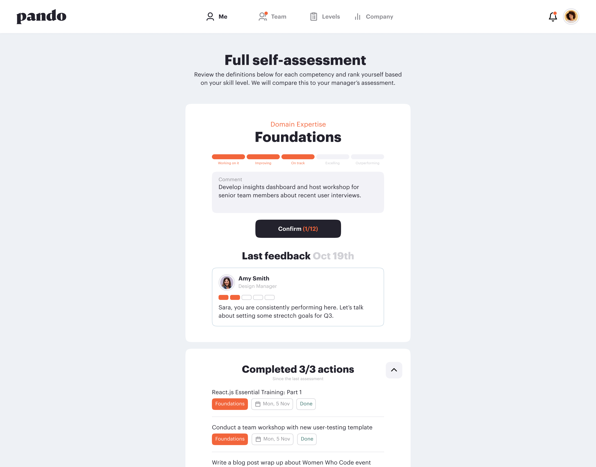

Buzzy “agile” performance management doesn’t solve the issue
by Delijeh Snyder, Head of marketing
May 5, 2022
Performance reviews are unpopular; in fact, my colleagues dreaded them even when I worked for a performance management SaaS company. We adopted quarterly reviews to have more frequent conversations and reduce recency bias. Still, managers complained about the hefty time commitment, and employees found it nerve-racking and emotional. The People team tried decoupling performance reviews from performance development to solve the problem, without success. The review part remained contentious and development conversations were subjective and didn’t contribute to actual career progression.
As the issues persisted, our company tried to repackage the process by calling it “agile performance management” and adding self-reflection, peer reviews, and regular 1:1s. Agile looked good on paper, but the employees and managers didn’t feel much change in practice. The agile buzzword and tweaks didn’t fix these glaring problems with the traditional performance management process:
Generic job leveling approaches, typically capped at five levels, glorify job titles and create a culture of promotion scarcity. That means performance reviews put employees in competition with one another, creating an environment – or perception of – the manager playing favorites. In some cases, performance reviews are made more difficult to poorly manage expectations and convince the employee they’re simply not ready, making the reviews unfair and demotivating
The “agile” label doesn’t address the adjacent issues of generic job levels, wide pay bands, and cyclical reviews. Therefore, rating and ranking remain a part of the process, even with more frequent reviews and developmental conversations. It’s no wonder the process remains competitive, stressful, and emotionally charged.
Performance reviews are a waste of time, especially for managers. On average, managers spend 17 hours per employee preparing for a performance review. Creating more reviews and check-ins exacerbates the problem, making the agile performance management process an even more costly exercise.
Adding more steps to the performance review process does partially tackle recency bias. It’s easier to remember the past three months (in the case of quarterly reviews) compared to an annual cadence. But without a clear, consistent structure for feedback, agile performance management is prone to other biases like gender and confirmation.
The solution: Pair contextual feedback with on-demand growth
Contextual feedback is an evolution of continuous feedback. It shifts the feedback paradigm from an evaluation of employee output to a growth mechanism focusing on their role- and level-specific competencies.
Contextual feedback isn’t another buzzword. Giving a clear, objective structure for feedback conversations turns managers into coaches. These structured conversations help managers better understand their team members’ career aspirations and desired growth pace. Better understanding builds rapport between managers and employees, contributing to higher employee engagement.
On-demand growth adds another dimension to this new paradigm: It puts employees in the driver’s seat of their career progression. Instead of waiting for a cyclical review, employees are encouraged to request skills assessments and feedback on their role- and level-specific competencies whenever they feel they are ready. Plus, a critical component of on-demand growth is clear, consistent, and transparent job levels across the organization. The transparency and structure allow employees to compare skills for different roles within the organization to level up or grow horizontally, driving and tracking their skills development and advancement in real-time.
Finally, more levels and narrower compensation bands combined with contextual feedback and on-demand growth allow employees to build mastery through an iterative, step-by-step progression. We call this new approach to feedback, career advancement, and job leveling “just-in-time” career progression. It strips the mystery and rarity of promotions away to create an environment where all individuals know what they need to do to advance.
More levels and narrower bands do more than address career stagnation. Having wide pay ranges means individuals on either end of the spectrum significantly differ in their compensation, even though they’re fulfilling a similar role. This results in severe inequities by giving more room for discretion and bias to play a role in hiring and promotion.
More levels and narrower bands clearly define the expectations for people performing at each level, creating less opportunities for bias to influence the hiring and promotion processes. It allows People teams and managers to objectively provide employees appropriate compensation without job title inflation, bring more equity to the promotion process, and help build a more equitable pay structure.
Ready to move away from the dreaded, uncomfortable performance management to just-in-time career progression?